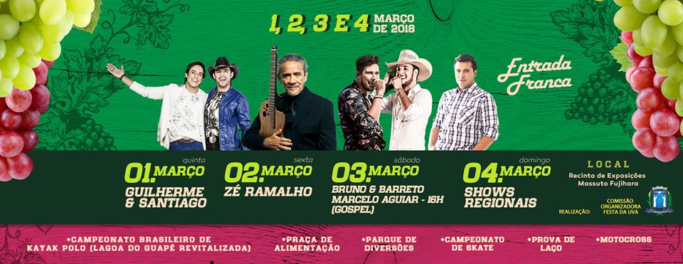

Emancipada em 1º de Abril de 1889, São Miguel Arcanjo é um município brasileiro do estado de São Paulo, localizado na Região Metropolitana de Sorocaba.
Sua economia está voltada para o setor agrícola, com o predomínio do cultivo de uvas do tipo Itália e Rubi.
A cidade de São Miguel Arcanjo, está inserida no Maior Contínuo de Mata Atlântica, denominado Contínuo de Paranapiacaba, o principal patrimônio ecológico de um bioma único, no qual vem se destacando nas práticas do Ecoturismo, dado a grande importância dos Parques, que são os grandes impulsionadores desta prática.
Atualmente devido a elevação da cidade a Santuário de São Miguel Arcanjo, o turismo religioso vem se destacando.
Próximos Eventos

Tem fotos da nossa cidade? Que tal compartilhar conosco?